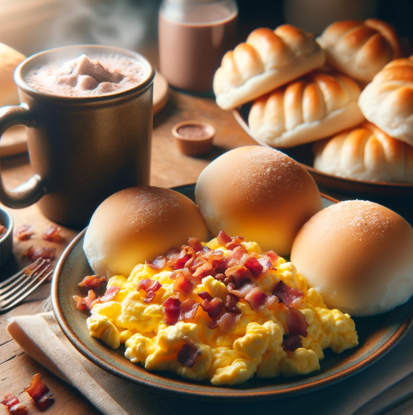

Fish Sinigang with Side of Mixed Greens
Ingredients
- 2 fillets of white fish (such as tilapia or cod), about 6 ounces each
- 1 onion, sliced
- 2 tomatoes, quartered
- 1 thumb-sized piece of ginger, sliced
- 1 long green chili pepper (siling haba), optional
- 4 cups water
- 1 cup tamarind (sampalok) juice or 2 tablespoons tamarind paste
- 2 cups mixed greens (such as spinach, bok choy, or kangkong)
- Fish sauce (patis) or salt, to taste
- Pepper, to taste
| Nutrition Facts |
| Calories |
61 kcal |
| Protien |
8.62g |
Meal Procedure
- Prepare the Soup Base:
- In a large pot, combine the water, onion, tomatoes, ginger, and green chili pepper (if using). Bring to a boil and let it simmer for about 10 minutes to extract flavors.
- Add Tamarind Juice:
- If using tamarind paste, dissolve it in water to make tamarind juice. Strain to remove seeds and pulp.
- Add the tamarind juice to the pot. Stir to combine.
- Cook the Fish:
- Carefully add the fish fillets to the pot. Let it simmer gently until the fish is cooked through, about 5-7 minutes. Be careful not to overcook the fish.
- Season the Soup:
- Season the sinigang with fish sauce or salt, to taste. Add pepper as desired.
- Add Mixed Greens:
- Add the mixed greens to the pot and let them cook for a few minutes until wilted.
- Serve:
- Ladle the fish sinigang into bowls, ensuring each serving has a portion of fish, vegetables, and broth.
- Serve hot with steamed rice on the side.
Tips:
- Adjust the sourness of the sinigang by adding more or less tamarind juice according to your preference.
- You can also add other vegetables like radish, eggplant, or string beans to the sinigang for added flavor and nutrition.
- For the mixed greens, you can use any combination of leafy greens you prefer or have on hand.
- Garnish with chopped green onions or cilantro for added freshness and flavor.